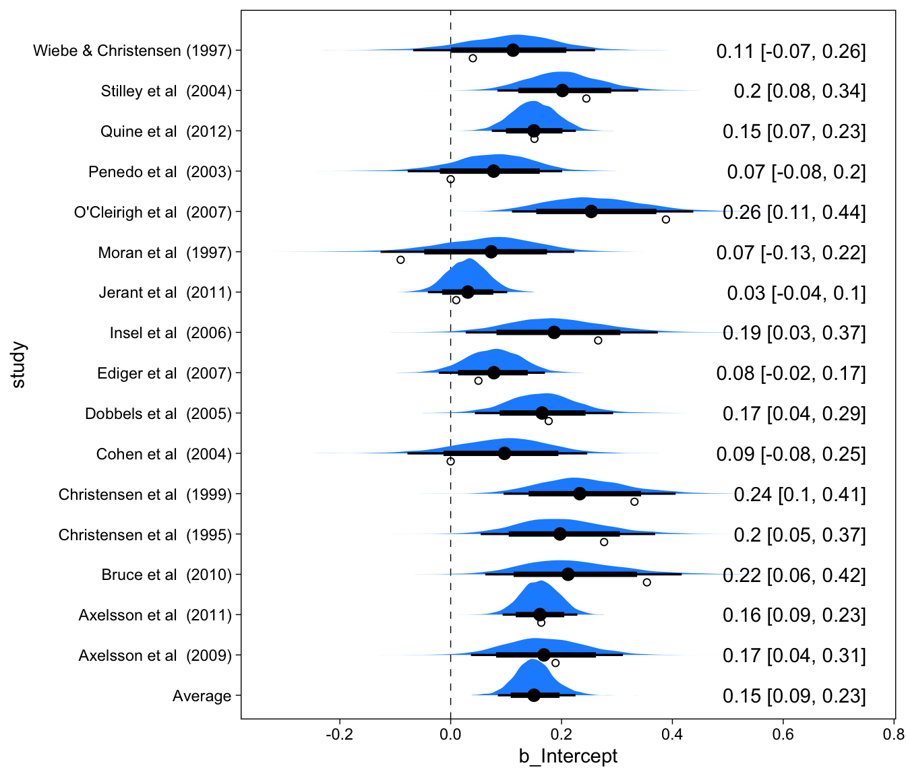

library(knitr)
library(kableExtra)
library(metafor)
library(scales)
library(lme4)
library(brms)
library(tidyverse)Bayesian Meta-Analysis with R, Stan, and brms
statistics
R
brms
tutorial
Meta-analysis is a special case of Bayesian multilevel modeling
Introduction
Recently, there’s been a lot of talk about meta-analysis, and here I would just like to quickly show that Bayesian multilevel modeling nicely takes care of your meta-analysis needs, and that it is easy to do in R with the rstan and brms packages. As you’ll see, meta-analysis is a special case of Bayesian multilevel modeling when you are unable or unwilling to put a prior distribution on the meta-analytic effect size estimate.
The idea for this post came from Wolfgang Viechtbauer’s website, where he compared results for meta-analytic models fitted with his great (frequentist) package metafor and the swiss army knife of multilevel modeling, lme4. It turns out that even though you can fit meta-analytic models with lme4, the results are slightly different from traditional meta-analytic models, because the experiment-wise variances are treated slightly differently.
Here are the packages we’ll use:
The data
Here I’ll only focus on a simple random effects meta-analysis of effect sizes, and will use the same example data as in the aforementioned website. The data are included in the metafor package, and describe the relationship between conscientiousness and medication adherence. The effect sizes are r to z transformed correlations.
| study | year | ni | ri | yi | vi | sei |
|---|---|---|---|---|---|---|
| Axelsson et al. (2009) | 2009 | 109 | 0.19 | 0.19 | 0.01 | 0.10 |
| Axelsson et al. (2011) | 2011 | 749 | 0.16 | 0.16 | 0.00 | 0.04 |
| Bruce et al. (2010) | 2010 | 55 | 0.34 | 0.35 | 0.02 | 0.14 |
| Christensen et al. (1995) | 1995 | 72 | 0.27 | 0.28 | 0.01 | 0.12 |
| Christensen et al. (1999) | 1999 | 107 | 0.32 | 0.33 | 0.01 | 0.10 |
| Cohen et al. (2004) | 2004 | 65 | 0.00 | 0.00 | 0.02 | 0.13 |
| Dobbels et al. (2005) | 2005 | 174 | 0.17 | 0.18 | 0.01 | 0.08 |
| Ediger et al. (2007) | 2007 | 326 | 0.05 | 0.05 | 0.00 | 0.06 |
| Insel et al. (2006) | 2006 | 58 | 0.26 | 0.27 | 0.02 | 0.13 |
| Jerant et al. (2011) | 2011 | 771 | 0.01 | 0.01 | 0.00 | 0.04 |
| Moran et al. (1997) | 1997 | 56 | -0.09 | -0.09 | 0.02 | 0.14 |
| O'Cleirigh et al. (2007) | 2007 | 91 | 0.37 | 0.39 | 0.01 | 0.11 |
| Penedo et al. (2003) | 2003 | 116 | 0.00 | 0.00 | 0.01 | 0.09 |
| Quine et al. (2012) | 2012 | 537 | 0.15 | 0.15 | 0.00 | 0.04 |
| Stilley et al. (2004) | 2004 | 158 | 0.24 | 0.24 | 0.01 | 0.08 |
| Wiebe & Christensen (1997) | 1997 | 65 | 0.04 | 0.04 | 0.02 | 0.13 |
The model
We are going to fit a random-effects meta-analysis model to these observed effect sizes and their standard errors. Here’s what this model looks like, loosely following notation from the R package Metafor’s manual (p.6):
\[y_i \sim N(\theta_i, \sigma_i^2)\]
where each recorded effect size, \(y_i\) is a draw from a normal distribution which is centered on that study’s “true” effect size \(\theta_i\) and has standard deviation equal to the study’s observed standard error \(\sigma_i\).
Our next set of assumptions is that the studies’ true effect sizes approximate some underlying effect size in the (hypothetical) population of all studies. We call this underlying population effect size \(\mu\), and its standard deviation \(\tau\), such that the true effect sizes are thus distributed:
\[\theta_i \sim N(\mu, \tau^2)\]
We now have two interesting parameters: \(\mu\) tells us, all else being equal, what I may expect the “true” effect to be, in the population of similar studies. \(\tau\) tells us how much individual studies of this effect vary.
I think it is most straightforward to write this model as yet another mixed-effects model (metafor manual p.6):
\[y_i \sim N(\mu + \theta_i, \sigma^2_i)\]
where \(\theta_i \sim N(0, \tau^2)\), studies’ true effects are normally distributed with between-study heterogeneity \(\tau^2\). The reason this is a little confusing (to me at least), is that we know the \(\sigma_i\)s (this being the fact that separates meta-analysis from other more common regression modeling).
Estimation with metafor
Super easy!
library(metafor)
ma_out <- rma(data = dat, yi = yi, sei = sei, slab = dat$study)
summary(ma_out)
##
## Random-Effects Model (k = 16; tau^2 estimator: REML)
##
## logLik deviance AIC BIC AICc
## 8.6096 -17.2191 -13.2191 -11.8030 -12.2191
##
## tau^2 (estimated amount of total heterogeneity): 0.0081 (SE = 0.0055)
## tau (square root of estimated tau^2 value): 0.0901
## I^2 (total heterogeneity / total variability): 61.73%
## H^2 (total variability / sampling variability): 2.61
##
## Test for Heterogeneity:
## Q(df = 15) = 38.1595, p-val = 0.0009
##
## Model Results:
##
## estimate se zval pval ci.lb ci.ub
## 0.1499 0.0316 4.7501 <.0001 0.0881 0.2118 ***
##
## ---
## Signif. codes: 0 '***' 0.001 '**' 0.01 '*' 0.05 '.' 0.1 ' ' 1Bayesian estimation
So far so good, we’re strictly in the realm of standard meta-analysis. But I would like to propose that instead of using custom meta-analysis software, we simply consider the above model as just another regression model, and fit it like we would any other (multilevel) regression model. That is, using Stan, usually through the brms interface. Going Bayesian allows us to assign prior distributions on the population-level parameters \(\mu\) and \(\tau\), and we would usually want to use some very mildly regularizing priors. Here we proceed with brms’ default priors (which I print below with the output)
Estimation with brms
Here’s how to fit this model with brms:
brm_out <- brm(
yi | se(sei) ~ 1 + (1 | study),
data = dat,
cores = 4,
file = "metaanalysismodel"
)## Family: gaussian
## Links: mu = identity; sigma = identity
## Formula: yi | se(sei) ~ 1 + (1 | study)
## Data: dat (Number of observations: 16)
## Draws: 4 chains, each with iter = 2000; warmup = 1000; thin = 1;
## total post-warmup draws = 4000
##
## Priors:
## Intercept ~ student_t(3, 0.2, 2.5)
## <lower=0> sd ~ student_t(3, 0, 2.5)
##
## Group-Level Effects:
## ~study (Number of levels: 16)
## Estimate Est.Error l-95% CI u-95% CI Rhat Bulk_ESS Tail_ESS
## sd(Intercept) 0.10 0.04 0.04 0.19 1.00 1399 2178
##
## Population-Level Effects:
## Estimate Est.Error l-95% CI u-95% CI Rhat Bulk_ESS Tail_ESS
## Intercept 0.15 0.03 0.09 0.23 1.00 1890 2023
##
## Family Specific Parameters:
## Estimate Est.Error l-95% CI u-95% CI Rhat Bulk_ESS Tail_ESS
## sigma 0.00 0.00 0.00 0.00 NA NA NA
##
## Draws were sampled using sampling(NUTS). For each parameter, Bulk_ESS
## and Tail_ESS are effective sample size measures, and Rhat is the potential
## scale reduction factor on split chains (at convergence, Rhat = 1).These results are the same as the ones obtained with metafor. Note the Student’s t prior distributions, which are diffuse enough not to exert influence on the posterior distribution.
Comparing results
We can now compare the results of these two estimation methods. Of course, the Bayesian method has a tremendous advantage, because it results in a full distribution of plausible values.

We can see from the numeric output, and especially the figures, that these modes of inference yield the same numerical results. Keep in mind though, that the Bayesian estimates actually allow you to discuss probabilities, and generally the things that we’d like to discuss when talking about results.
For example, what is the probability that the average effect size is greater than 0.2? About eight percent:
hypothesis(brm_out, "Intercept > 0.2")
## Hypothesis Tests for class b:
## Hypothesis Estimate Est.Error CI.Lower CI.Upper Evid.Ratio Post.Prob Star
## 1 (Intercept)-(0.2) > 0 -0.05 0.03 -0.1 0.01 0.09 0.09
## ---
## 'CI': 90%-CI for one-sided and 95%-CI for two-sided hypotheses.
## '*': For one-sided hypotheses, the posterior probability exceeds 95%;
## for two-sided hypotheses, the value tested against lies outside the 95%-CI.
## Posterior probabilities of point hypotheses assume equal prior probabilities.Forest plot
The forest plot displays the entire posterior distribution of each \(\theta_i\). The meta-analytic effect size \(\mu\) is also displayed in the bottom row. I’ll show a considerable amount of code here so that you can create your own forest plots from brms output:
library(tidybayes)
library(ggdist)
# Study-specific effects are deviations + average
out_r <- spread_draws(brm_out, r_study[study,term], b_Intercept) %>%
mutate(b_Intercept = r_study + b_Intercept)
# Average effect
out_f <- spread_draws(brm_out, b_Intercept) %>%
mutate(study = "Average")
# Combine average and study-specific effects' data frames
out_all <- bind_rows(out_r, out_f) %>%
ungroup() %>%
# Ensure that Average effect is on the bottom of the forest plot
mutate(study = fct_relevel(study, "Average")) %>%
# tidybayes garbles names so fix here
mutate(study = str_replace_all(study, "\\.", " "))
# Data frame of summary numbers
out_all_sum <- group_by(out_all, study) %>%
mean_qi(b_Intercept)
# Draw plot
out_all %>%
ggplot(aes(b_Intercept, study)) +
# Zero!
geom_vline(xintercept = 0, size = .25, lty = 2) +
stat_halfeye(.width = c(.8, .95), fill = "dodgerblue") +
# Add text labels
geom_text(
data = mutate_if(out_all_sum, is.numeric, round, 2),
aes(label = str_glue("{b_Intercept} [{.lower}, {.upper}]"), x = 0.75),
hjust = "inward"
) +
# Observed as empty points
geom_point(
data = dat %>% mutate(study = str_replace_all(study, "\\.", " ")),
aes(x=yi), position = position_nudge(y = -.2), shape = 1
)
Focus on Moran et al. (1997)’s observed effect size (the empty circle): This is an anomalous result compared to all other studies. One might describe it as incredible, and that is indeed what the bayesian estimation procedure has done, and the resulting posterior distribution is no longer equivalent to the observed effect size. Instead, it is shrunken toward the average effect size. Now look at the table above, this study only had 56 participants, so we should be more skeptical of this study’s observed ES, and perhaps we should then adjust our beliefs about this study in the context of other studies. Therefore, our best guess about this study’s effect size, given all the other studies is no longer the observed mean, but something closer to the average across the studies.
If this shrinkage business seems radical, consider Quine et al. (2012). This study had a much greater sample size (537), and therefore a smaller SE. It was also generally more in line with the average effect size estimate. Therefore, the observed mean ES and the mean of the posterior distribution are pretty much identical. This is also a fairly desirable feature.
Discussion
The way these different methods are presented (regression, meta-analysis, ANOVA, …), it is quite easy for a beginner, like me, to lose sight of the forest for the trees. I also feel that this is a general experience for students of applied statistics: Every experiment, situation, and question results in a different statistical method (or worse: “Which test should I use?”), and the student doesn’t see how the methods relate to each other. So I think focusing on the (regression) model is key, but often overlooked in favor of this sort of decision tree model of choosing statistical methods (McElreath 2020).
Accordingly, I think we’ve ended up in a situation where meta-analysis, for example, is seen as somehow separate from all the other modeling we do, such as repeated measures t-tests. In fact I think applied statistics in Psychology may too often appear as an unconnected bunch of tricks and models, leading to confusion and inefficient implementation of appropriate methods.
Bayesian multilevel modeling
As I’ve been learning more about statistics, I’ve often noticed that some technique, applied in a specific set of situations, turns out to be a special case of a more general modeling approach. I’ll call this approach here Bayesian multilevel modeling (McElreath 2020). If you are forced to choose one statistical method to learn, it should be Bayesian multilevel modeling, because it allows you to do and understand most things, and allows you to see how similar all these methods are, under the hood.
References
McElreath, Richard. 2020. Statistical Rethinking: A Bayesian Course with Examples in R and Stan. Second. CRC Texts in Statistical Science. Boca Raton: Taylor and Francis, CRC Press.
Reuse
Citation
BibTeX citation:
@online{vuorre2016,
author = {Matti Vuorre},
title = {Bayesian {Meta-Analysis} with {R,} {Stan,} and Brms},
date = {2016-09-29},
url = {https://sometimesir.com/posts/2016-09-29-bayesian-meta-analysis},
langid = {en}
}
For attribution, please cite this work as:
Matti Vuorre. 2016. “Bayesian Meta-Analysis with R, Stan, and
Brms.” September 29, 2016. https://sometimesir.com/posts/2016-09-29-bayesian-meta-analysis.